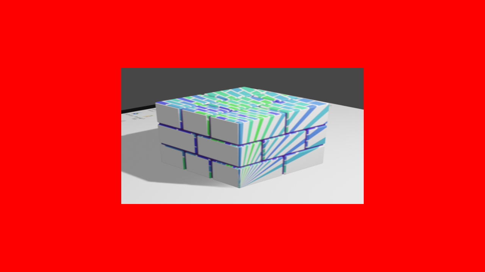

Ch7-7 使用贴图
本节的main.cpp对应示例代码中的：Ch7-7.hpp
经历了上一节的学习后，你应该已经能轻松地完成从读图到将图像数据拷贝到VkImage的一系列步骤。
本节的目标是在着色器中采样贴图。阅读本节前请确保已阅读Ch3-7 采样器。
到采样贴图为止的流程
在之前Ch7-1.hpp用顶点缓冲区绘制三角形代码的基础上，到采样贴图为止需要经历以下步骤：
1.按前一节的内容读取图像并创建相应的VkImage
2.为图像生成mipmap（非必要）
3.为图像创建VkImageView
4.创建采样器
5.创建描述符，将图像的image view和采样器写入描述符
6.创建顶点缓冲区
7.书写着色器并创建着色器模组
8.创建管线
9.绑定描述符并绘制
第1~3步参见Ch5-2 2D贴图及生成Mipmap，完成相应封装。
然后在主函数中读一张你喜欢的图：
int main() { /*...*/ texture2d texture("image/testImage.png", VK_FORMAT_R8G8B8A8_UNORM, VK_FORMAT_R8G8B8A8_UNORM, true); /*...*/ }
-
用stb_image读取到的图像数据通常应该为RGBA每个通道8位的整形（但还得取决于具体图像文件）。因此图像初始的格式应该标为VK_FORMAT_R8G8B8A8_开头的非压缩格式。根据在着色器中指定的贴图uniform变量类型，使用相应的图像格式（见后文的片段着色器），这里先指定为VK_FORMAT_R8G8B8A8_UNORM，理由之后再详述。为避免不必要的格式转换，前后都使用VK_FORMAT_R8G8B8A8_UNORM。
创建采样器
由于往后你会经常需要创建采样器，在texture类中添加一个函数来返回一个最普通平常的采样器的创建信息：
class texture { public: static VkSamplerCreateInfo SamplerCreateInfo() { return { .sType = VK_STRUCTURE_TYPE_SAMPLER_CREATE_INFO, .magFilter = VK_FILTER_LINEAR, .minFilter = VK_FILTER_LINEAR, .mipmapMode = VK_SAMPLER_MIPMAP_MODE_LINEAR, .addressModeU = VK_SAMPLER_ADDRESS_MODE_CLAMP_TO_EDGE, .addressModeV = VK_SAMPLER_ADDRESS_MODE_CLAMP_TO_EDGE, .addressModeW = VK_SAMPLER_ADDRESS_MODE_CLAMP_TO_EDGE, .mipLodBias = 0.f, .anisotropyEnable = VK_TRUE, .maxAnisotropy = graphicsBase::Base().PhysicalDeviceProperties().limits.maxSamplerAnisotropy, .compareEnable = VK_FALSE, .compareOp = VK_COMPARE_OP_ALWAYS, .minLod = 0.f, .maxLod = VK_LOD_CLAMP_NONE, .borderColor = {}, .unnormalizedCoordinates = VK_FALSE }; } };
各参数应当无需多做说明，有不明白的部分的话再好好读读Ch3-7 采样器。
接着在主函数中创建着色器：
int main() { /*...*/ VkSamplerCreateInfo samplerCreateInfo = texture::SamplerCreateInfo(); sampler sampler(samplerCreateInfo); /*...*/ }
创建并写入描述符
先前在Ch7-5 初识Uniform缓冲区中已经创建过描述符池和描述符了，这里与之类似，但有两点变更：
1.描述符类型变为VK_DESCRIPTOR_TYPE_COMBINED_IMAGE_SAMPLER（带采样器的图像），出于简化叙事的目的使用这一类型。对于采样器和图像作为两个独立描述符使用的情形，会在本节最后给出示例。
2.采样发生在片段着色器中，VkDescriptorSetLayoutBinding::stageFlags变更为VK_SHADER_STAGE_FRAGMENT_BIT。
descriptorSetLayout descriptorSetLayout_texture; pipelineLayout pipelineLayout_texture; void CreateLayout() { VkDescriptorSetLayoutBinding descriptorSetLayoutBinding_texture = { .binding = 0, //描述符被绑定到0号binding .descriptorType = VK_DESCRIPTOR_TYPE_COMBINED_IMAGE_SAMPLER,//类型为带采样器的图像 .descriptorCount = 1, //个数是1个 .stageFlags = VK_SHADER_STAGE_FRAGMENT_BIT //在片段着色器阶段采样图像 }; VkDescriptorSetLayoutCreateInfo descriptorSetLayoutCreateInfo_texture = { .bindingCount = 1, .pBindings = &descriptorSetLayoutBinding_texturePosition }; descriptorSetLayout_texture.Create(descriptorSetLayoutCreateInfo_texture); VkPipelineLayoutCreateInfo pipelineLayoutCreateInfo = { .setLayoutCount = 1, .pSetLayouts = descriptorSetLayout_texture.Address() }; pipelineLayout_texture.Create(pipelineLayoutCreateInfo); } int main() { /*...*/ VkDescriptorPoolSize descriptorPoolSizes[] = { { VK_DESCRIPTOR_TYPE_COMBINED_IMAGE_SAMPLER, 1 } }; descriptorPool descriptorPool descriptorPool(1, descriptorPoolSizes); descriptorSet descriptorSet_texture; /*待填充*/ /*...*/ }
写入描述符：
int main() { /*...*/ VkDescriptorPoolSize descriptorPoolSizes[] = { { VK_DESCRIPTOR_TYPE_COMBINED_IMAGE_SAMPLER, 1 } }; descriptorPool descriptorPool descriptorPool(1, descriptorPoolSizes); descriptorSet descriptorSet_texture; descriptorPool.AllocateSets(descriptorSet_texture, descriptorSetLayout_texture); VkDescriptorImageInfo imageInfo = { .sampler = sampler, .imageView = texture.ImageView(), .imageLayout = VK_IMAGE_LAYOUT_SHADER_READ_ONLY_OPTIMAL }; descriptorSet_texture.Write(imageInfo, VK_DESCRIPTOR_TYPE_COMBINED_IMAGE_SAMPLER); /*...*/ }
创建顶点缓冲区并指定顶点属性
这次的顶点数据由位置坐标和贴图坐标构成。
贴图坐标即采样贴图时的采样位置，（若创建采样器时没有将VkSamplerCreateInfo:: unnormalizedCoordinates指定为VK_TRUE）整张图像的贴图坐标范围为0~1，比如2D图像的左上角为{0.f, 0.f}，右下角为{1.f, 1.f}。
struct vertex { glm::vec2 position; glm::vec2 texCoord; };
先前在Ch7-2 初识索引缓冲区中使用四个顶点画了个长方形，这次也来画长方形：
vertex vertices[] = { { { -.5f, -.5f }, { 0, 0 } }, { { .5f, -.5f }, { 1, 0 } }, { { -.5f, .5f }, { 0, 1 } }, { { .5f, .5f }, { 1, 1 } } }; vertexBuffer vertexBuffer(sizeof vertices); vertexBuffer.TransferData(vertices);
相应地更改顶点属性：
pipelineCiPack.vertexInputAttributes.emplace_back(0, 0, VK_FORMAT_R32G32_SFLOAT, offsetof(vertex, position)); pipelineCiPack.vertexInputAttributes.emplace_back(1, 0, VK_FORMAT_R32G32_SFLOAT, offsetof(vertex, texCoord));
Texture.vert.shader
新建Texture.vert.shader，基于先前所写的VertexBuffer.vert.shader进行修改：
#version 460 #pragma shader_stage(vertex) layout(location = 0) in vec2 i_Position; layout(location = 1) in vec2 i_TexCoord; layout(location = 0) out vec2 o_TexCoord; void main() { gl_Position = vec4(i_Position, 0, 1); o_TexCoord = i_TexCoord; }
Texture.frag.shader
#version 460 #pragma shader_stage(fragment) layout(location = 0) in vec2 i_TexCoord; layout(location = 0) out vec4 o_Color; layout(binding = 0) uniform sampler2D u_Texture; void main() { o_Color = texture(u_Texture, i_TexCoord); }
-
涉及到的语法：各类贴图的声明。
-
texture(...)是一个GLSL的内置函数，有多个不同重载，在首个参数为sampler2D类型时，第二个参数应为vec2类型。
sampler2D要求对应的image view的图像格式为浮点数，即不能是UINT或SINT后缀的类型，我们先前指定了VK_FORMAT_R8G8B8A8_UNORM，UNORM后缀的图像格式最常见并且被广泛支持，采样结果会把0~255的8位整形标准化到[0, 1]的范围。
如果你想使用整数图像格式VK_FORMAT_R8G8B8A8_UINT，那么在上述代码基础上，u_Texture的类型变更为usampler2D，o_Color要除以255.f。注意整数图像格式很可能不支持线性滤波，相应地也要修改采样器的创建参数。
编译，然后在创建管线时更改要读取的文件：
void CreatePipeline() { static shaderModule vert("shader/Texture.vert.spv"); static shaderModule frag("shader/Texture.frag.spv"); //省略后续代码 }
创建管线并绘制
其他该改的管线创建参数都改了，这次（顺带）尝试将图元拓扑类型改为VK_PRIMITIVE_TOPOLOGY_TRIANGLE_STRIP，这么一来即使没有绑定索引缓冲区，也能仅靠4个顶点来绘制长方形（使用该种图源拓扑类型时，4个顶点生成2个三角形）：
pipelineCiPack.inputAssemblyStateCi.topology = VK_PRIMITIVE_TOPOLOGY_TRIANGLE_STRIP;
VK_PRIMITIVE_TOPOLOGY_TRIANGLE_STRIP意味着按照0,1,2、1,2,3、2,3,4、...这样的顶点顺序来绘制三角形，每个点和其前两个点构成三角形。这里的编号对应最终读取到的顶点，即，如果你绑定了索引缓冲区并使用vkCmdDrawIndexed(...)进行索引绘制，那么前文所说的规则应用于根据索引读取到的顶点序列。
最后整个CreatePipeline()如下：
void CreatePipeline() { static shaderModule vert("shader/Texture.vert.spv"); static shaderModule frag("shader/Texture.frag.spv"); static VkPipelineShaderStageCreateInfo shaderStageCreateInfos_texture[2] = { vert.StageCreateInfo(VK_SHADER_STAGE_VERTEX_BIT), frag.StageCreateInfo(VK_SHADER_STAGE_FRAGMENT_BIT) }; auto Create = [] { graphicsPipelineCreateInfoPack pipelineCiPack; pipelineCiPack.createInfo.layout = pipelineLayout_texture; pipelineCiPack.createInfo.renderPass = RenderPassAndFramebuffers().renderPass; pipelineCiPack.vertexInputBindings.emplace_back(0, sizeof(vertex), VK_VERTEX_INPUT_RATE_VERTEX); pipelineCiPack.vertexInputAttributes.emplace_back(0, 0, VK_FORMAT_R32G32_SFLOAT, offsetof(vertex, position)); pipelineCiPack.vertexInputAttributes.emplace_back(1, 0, VK_FORMAT_R32G32_SFLOAT, offsetof(vertex, texCoord)); pipelineCiPack.inputAssemblyStateCi.topology = VK_PRIMITIVE_TOPOLOGY_TRIANGLE_STRIP; pipelineCiPack.viewports.emplace_back(0.f, 0.f, float(windowSize.width), float(windowSize.height), 0.f, 1.f); pipelineCiPack.scissors.emplace_back(VkOffset2D{}, windowSize); pipelineCiPack.multisampleStateCi.rasterizationSamples = VK_SAMPLE_COUNT_1_BIT; pipelineCiPack.colorBlendAttachmentStates.push_back({ .colorWriteMask = 0b1111 }); pipelineCiPack.UpdateAllArrays(); pipelineCiPack.createInfo.stageCount = 2; pipelineCiPack.createInfo.pStages = shaderStageCreateInfos_texture; pipeline_texture.Create(pipelineCiPack); }; auto Destroy = [] { pipeline_texture.~pipeline(); }; graphicsBase::Base().AddCallback_CreateSwapchain(Create); graphicsBase::Base().AddCallback_DestroySwapchain(Destroy); Create(); }
进行绘制。在命令缓冲区中，绑定顶点缓冲区、管线、描述符，然后调用绘制命令，绘制的顶点数量为4：
//省略先前代码 commandBuffer.Begin(VK_COMMAND_BUFFER_USAGE_ONE_TIME_SUBMIT_BIT); renderPass.CmdBegin(commandBuffer, framebuffers[i], { {}, windowSize }, clearColor); VkDeviceSize offset = 0; vkCmdBindVertexBuffers(commandBuffer, 0, 1, vertexBuffer.Address(), &offset); vkCmdBindPipeline(commandBuffer, VK_PIPELINE_BIND_POINT_GRAPHICS, pipeline_texture); vkCmdBindDescriptorSets(commandBuffer, VK_PIPELINE_BIND_POINT_GRAPHICS, pipelineLayout_texture, 0, 1, descriptorSet_texture.Address(), 0, nullptr); vkCmdDraw(commandBuffer, 4, 1, 0, 0); renderPass.CmdEnd(commandBuffer); commandBuffer.End(); //省略后续代码
运行程序，效果如下：
使用分开的采样器和图像
如果你要使用分开的采样器和图像，基于前述代码，做以下变更。
首先，创建管线布局时，将binding0和1分别指定为VK_DESCRIPTOR_TYPE_SAMPLER和VK_DESCRIPTOR_TYPE_SAMPLED_IMAGE类型的描述符：
VkDescriptorSetLayoutBinding descriptorSetLayoutBindings_texture[2] = { { .binding = 0, .descriptorType = VK_DESCRIPTOR_TYPE_SAMPLER, .descriptorCount = 1, .stageFlags = VK_SHADER_STAGE_FRAGMENT_BIT }, { .binding = 1, .descriptorType = VK_DESCRIPTOR_TYPE_SAMPLED_IMAGE, .descriptorCount = 1, .stageFlags = VK_SHADER_STAGE_FRAGMENT_BIT } }; VkDescriptorSetLayoutCreateInfo descriptorSetLayoutCreateInfo_texture = { .bindingCount = 2, .pBindings = descriptorSetLayoutBindings_texture };
相应地，将采样器和图像各写入描述符的不同binding：
VkDescriptorPoolSize descriptorPoolSizes[] = { { VK_DESCRIPTOR_TYPE_SAMPLER, 1 }, { VK_DESCRIPTOR_TYPE_SAMPLED_IMAGE, 1 } }; descriptorPool descriptorPool(2, descriptorPoolSizes); descriptorSet descriptorSet_texture; descriptorPool.AllocateSets(descriptorSet_texture, descriptorSetLayout_texture); VkDescriptorImageInfo imageInfos[2] = { { .sampler = sampler, }, { .imageView = texture.ImageView(), .imageLayout = VK_IMAGE_LAYOUT_SHADER_READ_ONLY_OPTIMAL } }; descriptorSet_texture.Write(imageInfos[0], VK_DESCRIPTOR_TYPE_SAMPLER, 0); descriptorSet_texture.Write(imageInfos[1], VK_DESCRIPTOR_TYPE_SAMPLED_IMAGE, 1);
Texture.vert.shader变为：
#version 460 #pragma shader_stage(fragment) layout(location = 0) in vec2 i_TexCoord; layout(location = 0) out vec4 o_Color; layout(binding = 0) uniform sampler u_Sampler; layout(binding = 1) uniform texture2D u_Texture; void main() { o_Color = texture(sampler2D(u_Texture, u_Sampler), i_TexCoord); }
-
texture(...)的首个参数通过构造临时的sampler2D变量获得。